Изготовление наклеек
- 1. Открыть Corel Draw, открыть файл prime.cdr. Файл prime.cdr является шаблоном для размещения меток, поэтому изменять и/или сохранять этот файл запрещено!
- 2. Выбрать «Сохранить как», чтобы сохранить файл под другим именем. Имя нового файла – сегодняшняя дата (например 19.03.18.cdr), папка – /Печать. Так файл легко будет найти в будущем для сверки или повторного использования.
- 3. Если используется макрос, то запускаем его, вставляем нужные наклейки и идем к пункту 7
- 4. Открыть нужный файл наклеек – имя файла соответствует номеру заказа
- 5. Выбрать нужную наклейку и скопировать её в prime.cdr(между окнами в кореле удобно переключаться с помощью Ctrl+Tab).
- 6. Каждой наклейке набрать нужный серийный номер, год и т. д.
- 7. Разместить все необходимые наклейки внутри угловых меток с отступом от меток, как на рисунке: 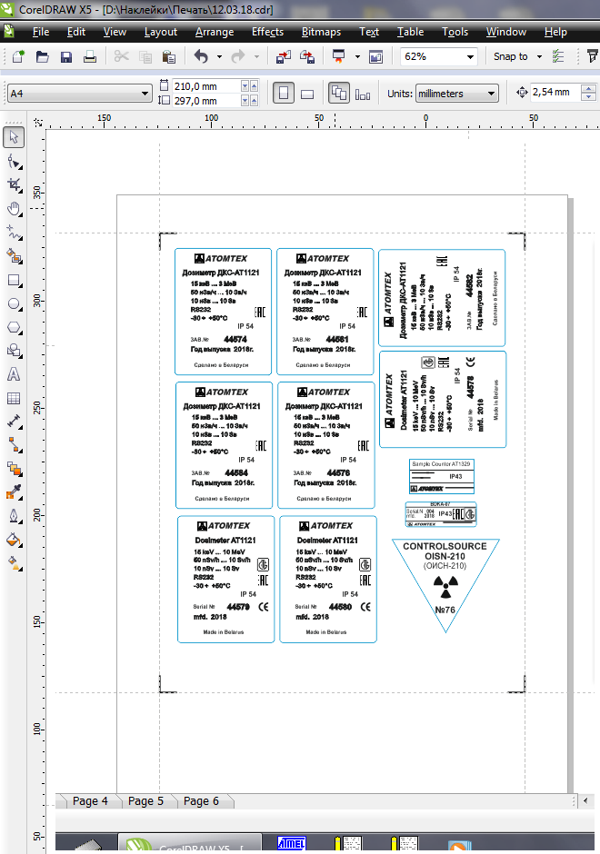
- 8. Со всех наклеек на листе вырезать (Ctrl+X) контур наклеек (обычно раскрашен в синий цвет) и вставить на следующий лист – так с контурами наклеек и с изображениями наклеек можно будет работать раздельно. 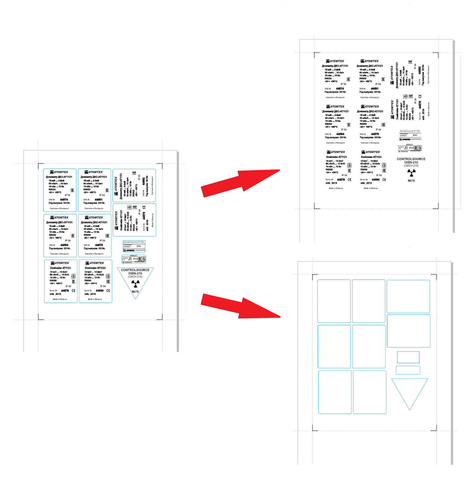
- 9. Выбираем страницу с наклейками (1-ю) и жмём Ctrl+P. Выбираем "Текущую страницу" ("Current page") и жмём Print: 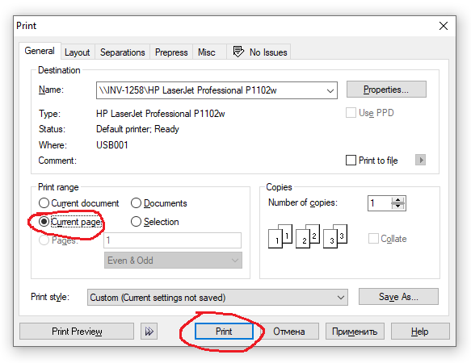
- 10. Распечатать лист с наклейками (без контуров!) на оракале нужного цвета (обычно серого).
- 11. С помощью ламинатора заламинировать лист:
- вставить ламинат (прозрачной пленкой вверх)
- затянуть край листа на ~5мм (чтобы зафиксировать лист)
- отделить прозрачную (клейкую) часть ламината
- вставить распечатанный оракал 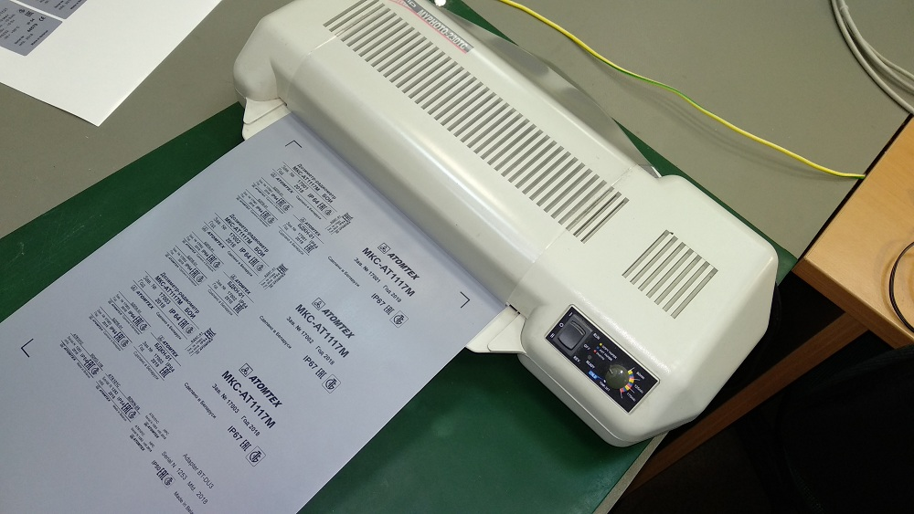
- нажать переключатель вверх. Устройство заламинирует лист
- Вернуть переключатель в среднее положение
- Проверить результат ламинирования, удалить основание ламината, ножницами удалить сильно выступающие края пленки
- 12. Вставить лист в плоттер, соблюдая метки (лист вставляется перевернутым, широким отступом вперед). Опустить рычаг плоттера (справа) 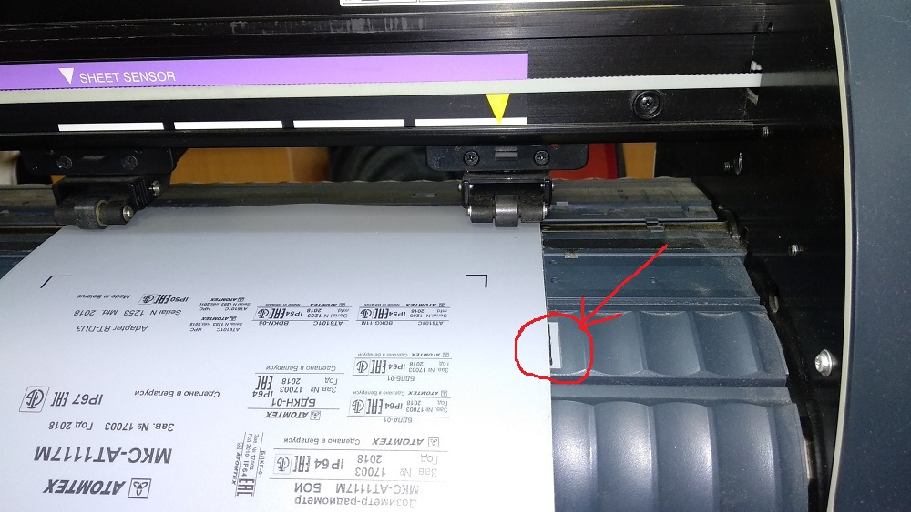
- 13. Нажать "вниз" — плоттер распознает размер листа
- 14. С помощью клавиш "вправо"/"вниз"/"влево"/"вверх" установить луч (красную точку) примерно посередине угловой метки. 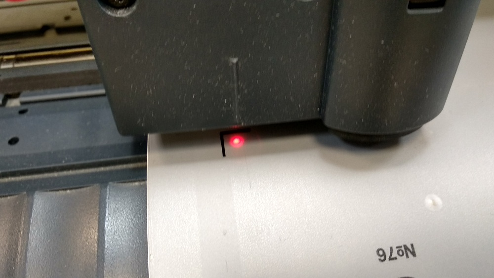
- 15. Нажать "Enter"
- 16. После того как плоттер распознает все метки нажать "Remote" — плоттер передаст управление компьютеру.
- 17. В кореле выбрать лист с контурами наклеек.
- 18. На панеле инструментов кликнуть иконку плоттера. 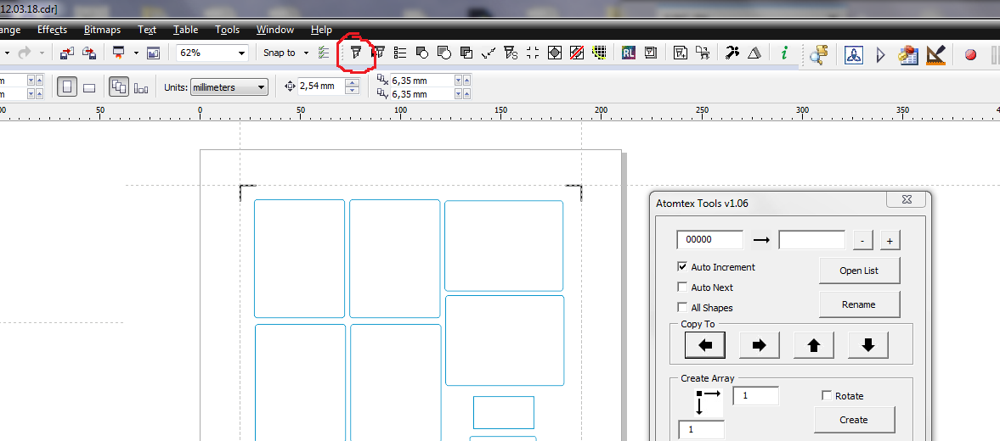 Программа распознает все контуры и откроет окно с настройками. 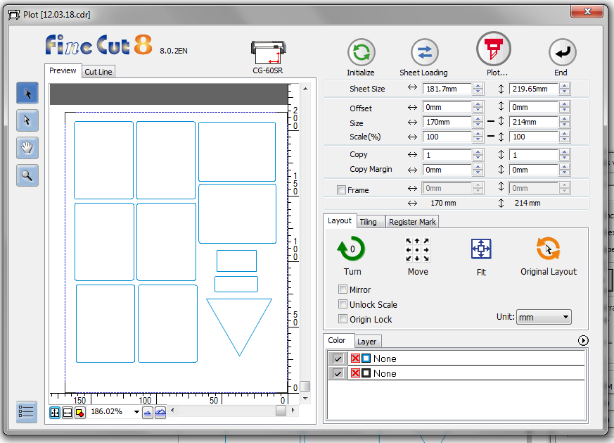
- 19. Выбрать вкладку "Register Mark" и нажать "Detect Mark". 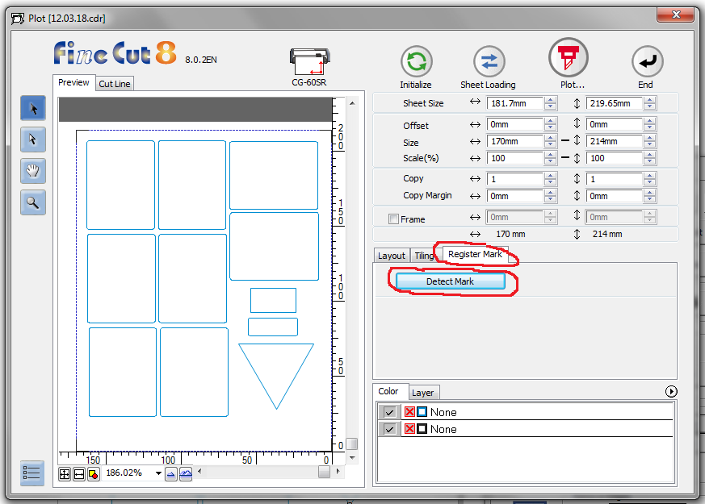
- 20. В окне пред просмотра над изображением листа с контурами появится синяя полоса — это означает, что плоттер готов к нарезке (если появилась иконка с восклицательным знаком — значит где-то ошибка) 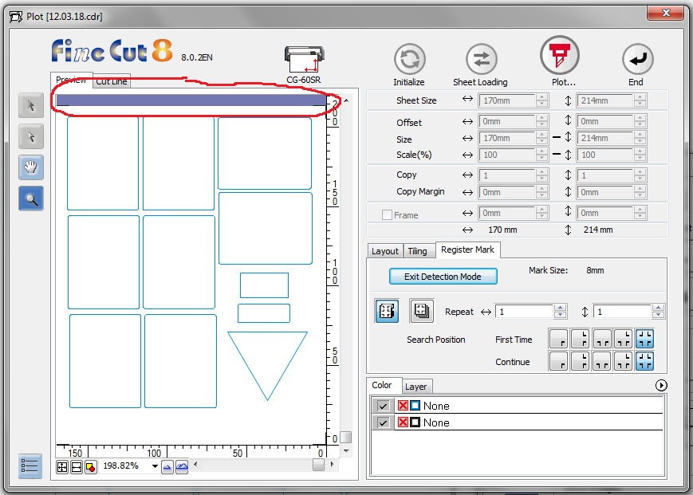
- 21. Нажать кнопку "Plot..." В появившемся окне нажать кнопку "Plot". После этого плоттер сразу же приступит к нарезке. 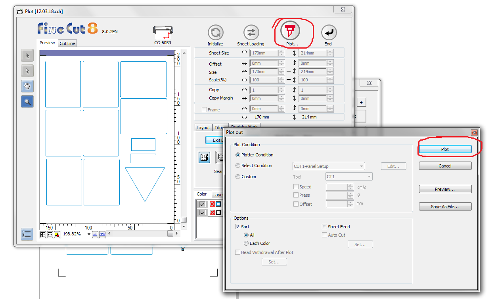
- 22. После того как плоттер закончит работу, на плоттере нажать:
- "REMOTE"
- "SHEET SET"
- 23. После этого поднять рычаг вверх и достать лист
- 24. Удалить лишний оракал. Наклейки готовы! 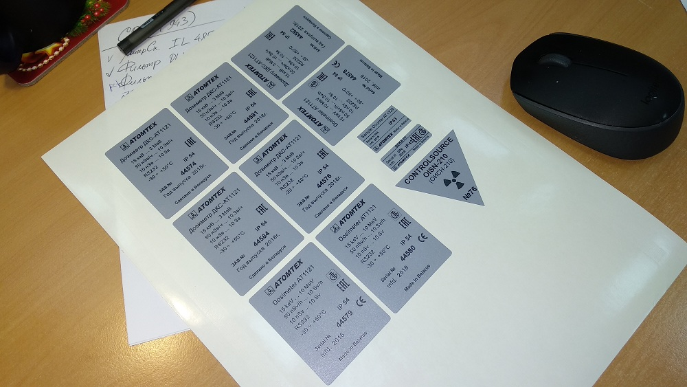
Нет необходимости вручную рисовать наклейки, вставлять серийный номер, вырезать контуры и т.д. Для этого
есть удобный макрос (здесь описание работы с этим макросом) "Atomtex
Tools" — с его помощью жизнь становиться веселее. Для запуска нажать иконку Атомтеха на панели
инструментов
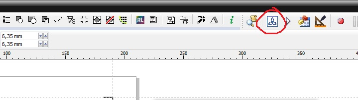
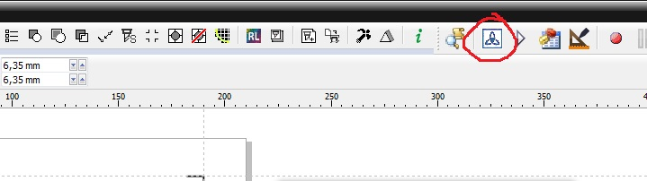
Бывает так, что краска плохо ложится на наклейку, контуры получаются бледными или с "дырками"
(значит пора менять картридж в принтере). Тогда применяем такой трюк: в настройках принтера
выбираем Тип бумаги "Плотная". Лучше ляжет краска:
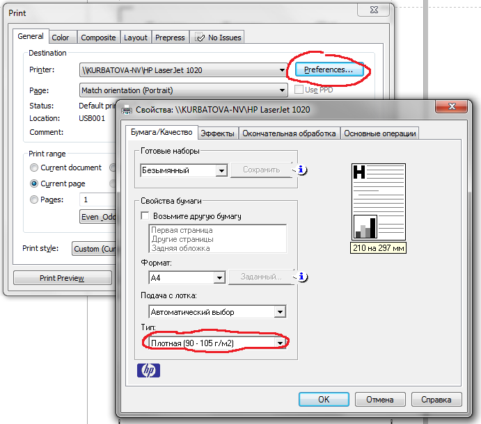
Иногда бывает плоттер не может распознать метки и выдаёт ошибку. Это случается из-за того, что метки по
какой-то причине получились нечеткими. Чтобы не перепечатывать заново весь лист, можно просто аккуратно
подрисовать угловые метки черной ручкой (гелевая отлично подойдет)
Если при удалении лишнего оракала наклейки плохо отсоединяются по разрезанному контуру (плохо
прорезались)
— это значит пора чуть-чуть опустить нож в плоттере (потом напишу, как)